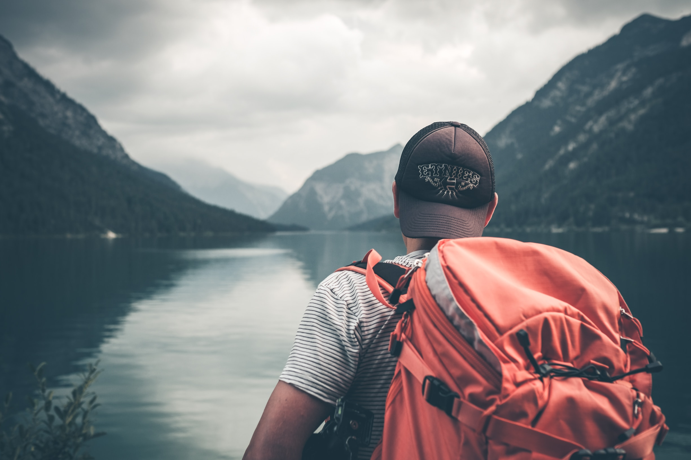
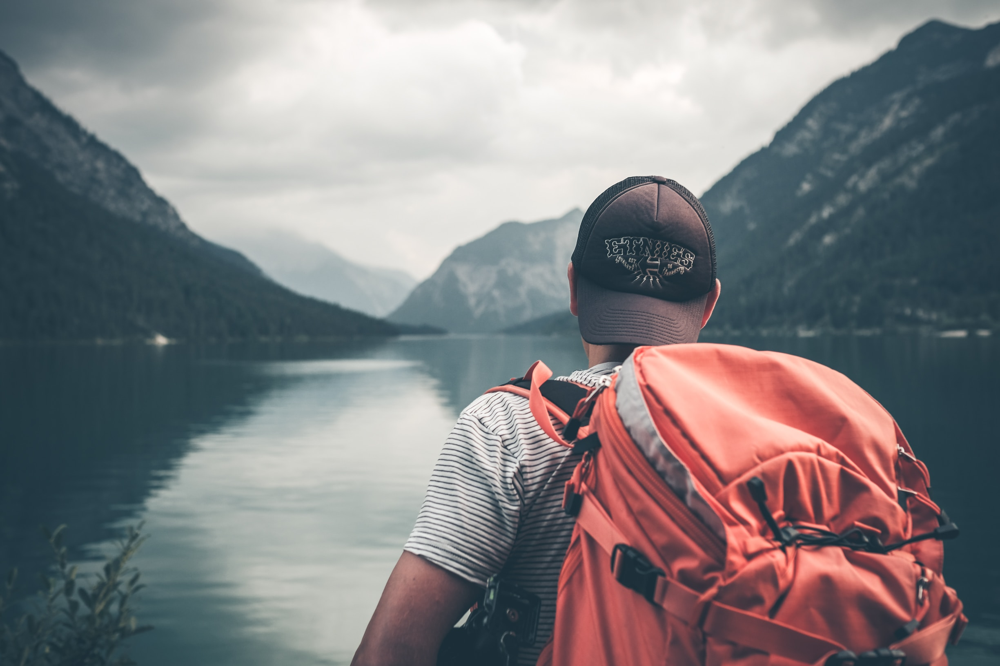

Tasting Authentic Pho in Hanoi, Vietnam:
Rating: ★★★★★
Embark on a journey with me as I explore the wonders of the
world.
From bustling cities to serene landscapes, this blog is your
passport to thrilling experiences and captivating destinations.

 


My love affair with travel began with a single step onto foreign soil. I still vividly recall my first adventure—a spontaneous weekend getaway to a nearby town. It was a modest start, but the thrill of exploring unfamiliar streets, tasting new flavors, and immersing myself in a different culture left an indelible mark.
That initial journey ignited a fire within me, and I soon found myself craving more. I delved into planning and embarked on progressively ambitious trips. From the bustling markets of Marrakech to the serene temples of Kyoto, each destination became a chapter in my ever-evolving travel narrative.
One pivotal trip that stands out was my solo expedition through the vibrant cities of Europe. Navigating ancient streets and discovering hidden courtyards, I forged an unbreakable bond with the essence of wanderlust. It was during this journey that I realized the profound impact travel could have on personal growth and self-discovery.
Throughout the years, travel has become my greatest teacher. It's taught me the art of adaptability, the beauty of human connection, and the importance of embracing the unknown. From the peaks of majestic mountains to the shores of remote islands, I've witnessed the awe-inspiring diversity our world has to offer.
These experiences have not only enriched my life but have also shaped the way I approach travel and share my adventures with you. It's my hope that through these stories, you'll find inspiration to embark on your own transformative journeys and discover the incredible tapestry of our planet.
Explore the incredible places I've had the privilege to visit.
| ✈ Country | ⚐ Visited Places | ☼ Duration | ☺ Satisfaction Level | ♨ Best Food | ⅔ Date Visited |
|---|---|---|---|---|---|
| France | Paris, Provence, French Riviera | 2 weeks |
|
Croissants , Escargot | June 2019 |
| Japan | Tokyo, Kyoto, Osaka | 3 weeks |
|
Sushi, Ramen | April 2020 |
| Italy | Rome, Florence, Venice | 10 days |
|
Pizza Gelato | September 2021 |
| Spain | Barcelona, Seville, Madrid | 2 weeks |
|
Tapas, Paella | July 2022 |
| Greece | Athens, Santorini, Mykonos | 12 days |
|
Moussaka, Souvlaki | August 2018 |
| Thailand | Bangkok, Chiang Mai, Phuket | 3 weeks |
|
Pad Thai, Green Curry | January 2021 |
Embarking on a journey is an exhilarating experience, but it can also come with its share of challenges. Over the years, I've gathered valuable insights and practical tips to make your travels smoother and more enjoyable. Here are some of my tried-and-true travel tips:
Remember, every traveler's journey is unique. These tips are here to guide you, but your own experiences and discoveries will be the true treasures of your adventure. Safe travels!
One of the most delightful aspects of travel is the opportunity to savor the diverse flavors of the world. Join me on a gastronomic journey as we explore the culinary wonders of the destinations I've been fortunate to visit.
From sizzling street food stalls to Michelin-starred restaurants, I've relished every bite and discovered that food is not just sustenance; it's a doorway to culture, history, and human connection.
Here are some of my most memorable food adventures:
Tasting Authentic Pho in Hanoi, Vietnam:
Rating: ★★★★★
Spice Markets in Morocco:
Rating: ★★★★☆
Indulging in Gelato in Rome, Italy:
Rating: ★★★★★
Street Tacos in Mexico:
Rating: ★★★☆☆